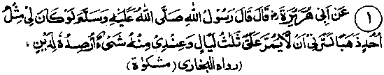

Chapter One · Section (b): Ahadith on the virtues of spending for the cause of Allah
Section (b)
Ahadith on the Virtues of Spending for the Cause of Allah
After quoting so many Ayaat of the Holy Qur’an on the subject of spending for the cause of Allah Ta'ala, there should be no need of quoting any Ahadith bearing bn this subject But since the Ahadith clarify and explain the sacred Word of Allah Subhanahu Ta'ala, it would be worthwhile narrating a few Ahadith before concluding this Chapter.
1. The austere life of Abu Zar (Radhiallaho anho)

Hadith 1
Rasulullah Sallallaho alaihe wasallam said, "If I possessed gold to the extent of mount Uhud, I would not like to keep any of it with me for more than three days, except what I put aside for paying a debt".
Note: Mount Uhud is well-known as the biggest mountain near Madinah. Rasulullah Sallallaho alaihe wasallam has said that, if he had as much gold as the mountain of Uhud, he would like to give it away within three days and would not keep any portion of it with himself. This is simply meant to convey that it will take at least three days to distribute that huge amount of gold. Of course, if there was debt to be paid and the creditor was not present, some portion of gold could be retained till the debt could be paid. This shows that payment of a debt is more important than Sadaqah. It was the noble habit of Rasulullah not to hoard anything. Anas Radhiallaho anho who was the special attendant of Rasulullah Sallallaho alaihe wasallam says that he never kept anything for the next day. Once somebody presented three birds to Rasulullah Sallallaho alaihe wasallam, one of which he gave to his own attendant. The attendant brought back that bird the following day to Rasulullah Sallallaho alaihe wasallam who said to him "Have I not told you not to keep anything for the next day? Allah Jalla Shanohu Himself will provide food for the next day." Samurah Radhiallaho anho has quoted Rasulullah Sallallaho alaihe wasallam as saying that he checked the store cabinet frequently to make sure that nothing was left in it, lest he should die with something left behind.
Abu Zarr Ghifari Radhiallaho anho, a famous and extremely pious Sahabi, had particular aversion to wealth, about which several incidents have been reported, one of which has been related under the Ayat given at Serial No. 11 above. He says, "I was once accompanying Rasulullah Sallallaho alaihe wasallam when he looked at Mount Uhud find said, "If this mountain were to turn into gold and be given to me, I would not like to keep a single Dinaar of it with me for more than three days except that which I put aside to pay a debt". He added, "Many of those who have much property shall gain scanty rewards, except for those who say, ‘Take this and this, before them, behind them, on their right and on their left". (The narrator made a gesture indicating that they spend profusely with both their hands, distributing money to people around them). (Bukhari)
In Mishkaat, another incident has been related about Abu Zarr Radhiallaho anho. Abu Zarr Radhiallaho anho was once sitting with Uthman Radhiallaho anho during the period of the latter’s Caliphate when he told Ka‘b Radhiallaho anho that Abdur Rahman Radhiallaho anho had died leaving behind some property and asked him what he thought about it. Ka’b replied that there was no harm in leaving such property if he had given what was due on it to Allah Ta'ala. Hearing this, Abu Zarr raised the stick he was carrying, struck Ka‘b and said that he had heard Rasulullah Sallallaho alaihe wasallam saying, "If I possessed gold equal in quantity to this mountain, which I could spend and which were accepted from me, I would not like to leave behind even six ‘Auqias’ (a small weight) of it". Abu Zarr Radhiallaho anho then turned to Uthman Radhiallaho anho and adjured him three times to tell him if he had not heard Rasulullah Sallallaho alaihe wasallam saying these words. Uthman said that he had.
Imaam Bukhari Rahmatullah alaihe has related still another story about Abu Zarr Radhiallaho anho, on the authority of Ahnaf Ibne Qais Rahmatullah alaihe, who says, "I was once sitting with a group of the Quraish in Madinah Munawwarah when a man came there. He had stiff, dry and dishevelled hair, was dressed in coarse cloth and looked an ordinary man. He stopped by their side, greeted them saying, ‘Assalam-o-Alaikum’ and then addressing the people, said "Give those who hoard up treasures, tidings of a rock heated in the fire of Jahannam, which will be placed on their breasts; its heat will cause their flesh to melt and to boil over their shoulders. The rock will then be put on their shoulders causing it to flow from their breasts". Saying this, he went into the Masjid and sat down beside a pillar. I did not know who this Divine was; so, I followed him, sat near him and said, "The people gathered there did not pay heed to what you said; they rather seemed to dislike your saying so". The divine replied, "They are fools who lack proper understanding, my most loved friend once told me". When I asked him who was his most loved friend, he replied, "Rasulullah Sallallaho alaihe wasallam was my most loved friend who once said to me, ‘Abu Zarr, do you see Mount Uhud over there? I said that I did" (thinking that he wanted to send me on an errand and was telling me how much time remained before sunset) He then said, "If I had gold to the extent of that mountain I would love to spend all of it except for three Dinaars".
Other versions of the Hadith explain why he would like to keep three Dinaars. After this Abu Zarr Radhiallaho anho said, "These people have no sense; they go on hoarding wealth. By Allah, I neither expect them to give me any money,' nor need to ask them anything about my religion! Then, why should I fed afraid or hesitate to tell them exactly what I believe to be true?" (Fatah)
We shall relate another incident about Abu Zarr Radhiallaho anho under the Ayat given at Serial No. 5 in Chapter two below, Insha Allah.